Kitchen & dining renovation
3D loads when you choose to explore
Drag to orbit · scroll or pinch to zoom · right-drag to pan
Model notes & downloads
Open the kitchen toward dining, with a two-seat bar in the old hutch footprint, a farmhouse sink and tall storage.
The current two-stool concept preserves the wall beside the former hutch and stops the bar at the original doorway jamb. Each seat has 15 inches of knee depth. The passage is about 30⅝ inches to the modeled refrigerator handles with the doors closed. Concealed masonry, support, appliance installation and door operation remain unverified.
Related: Main floor
Rendered views & plans

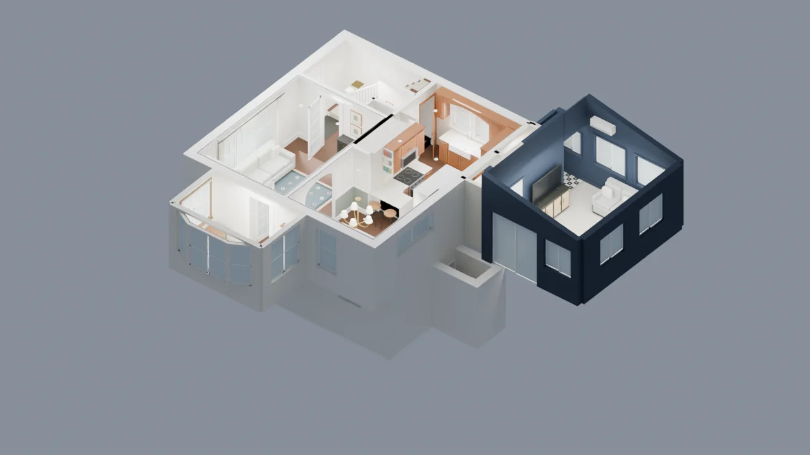

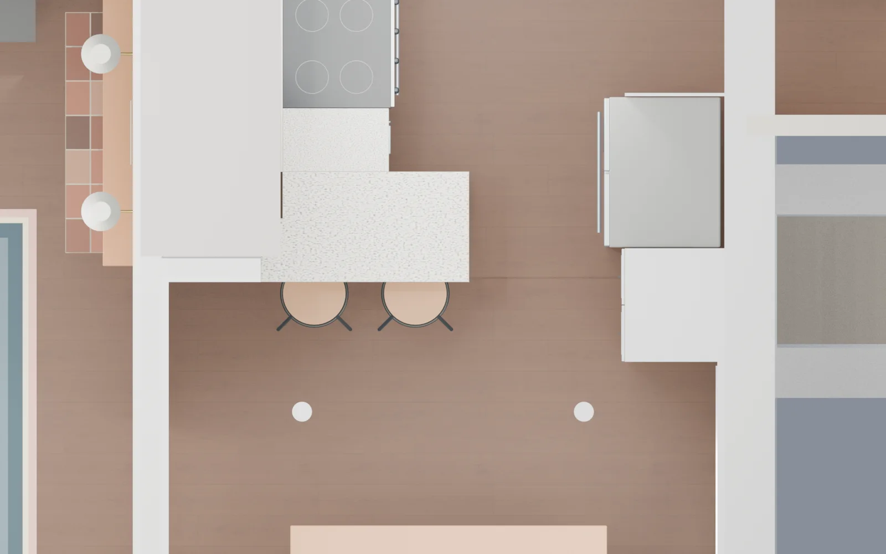

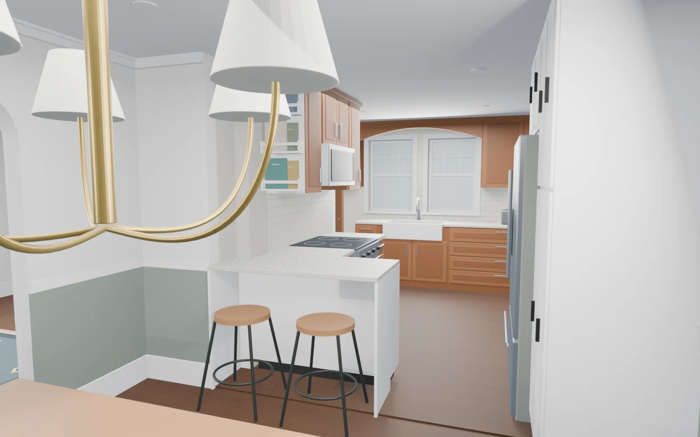

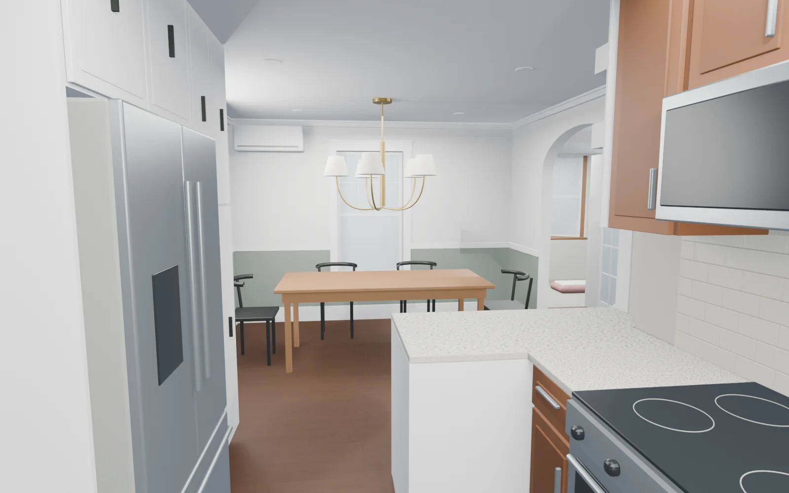

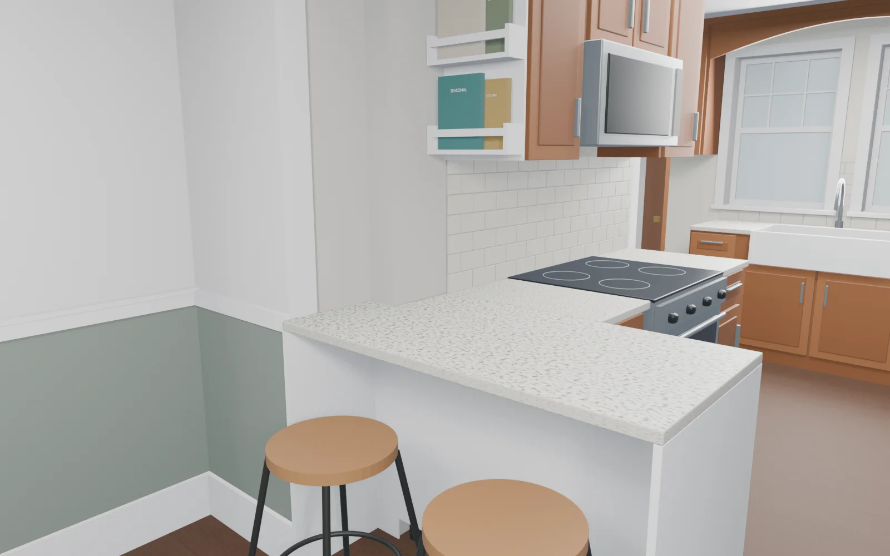

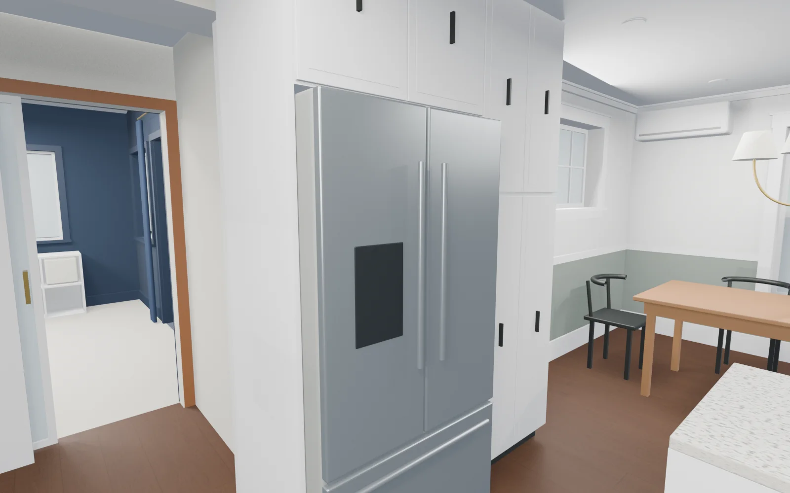

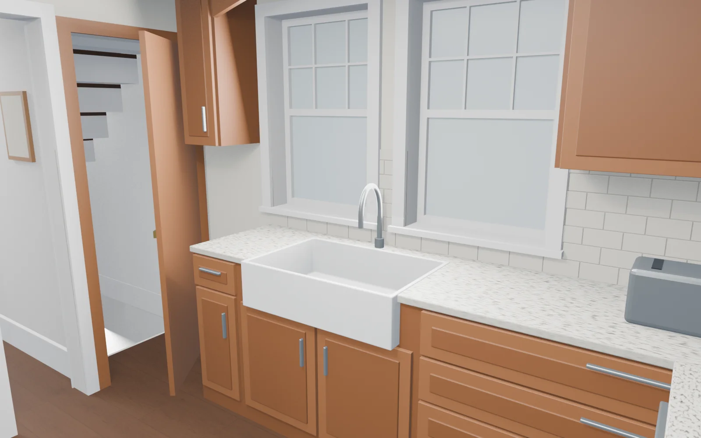


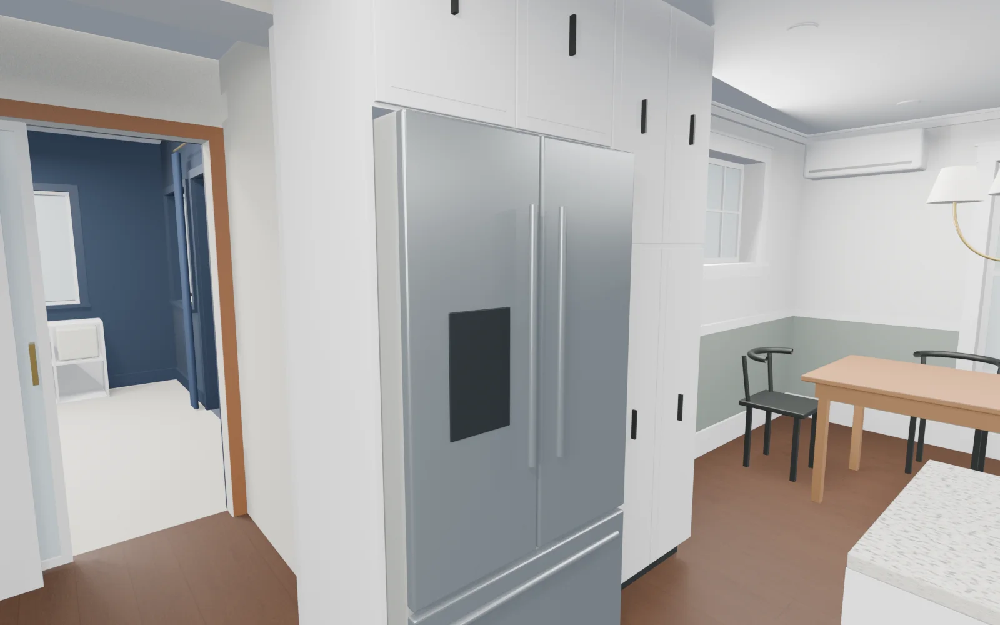

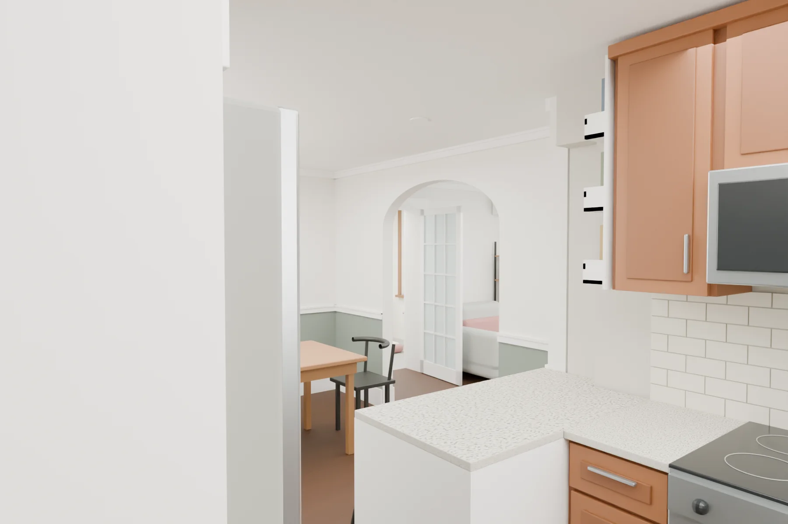

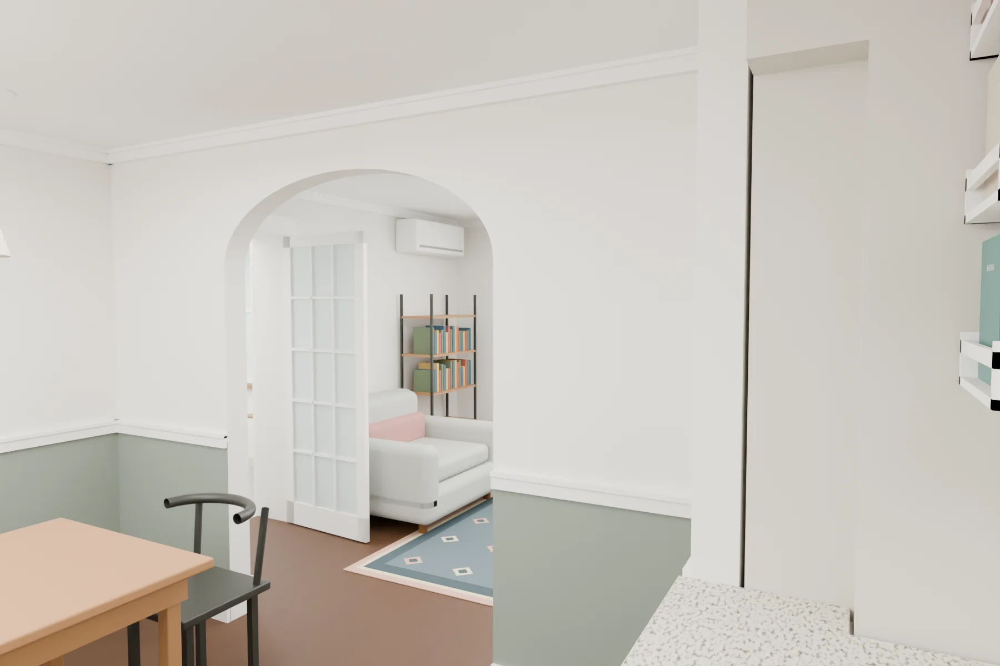

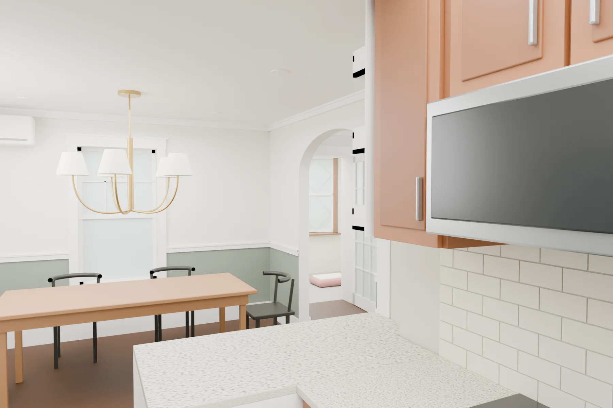
Where the sightline cameras stand